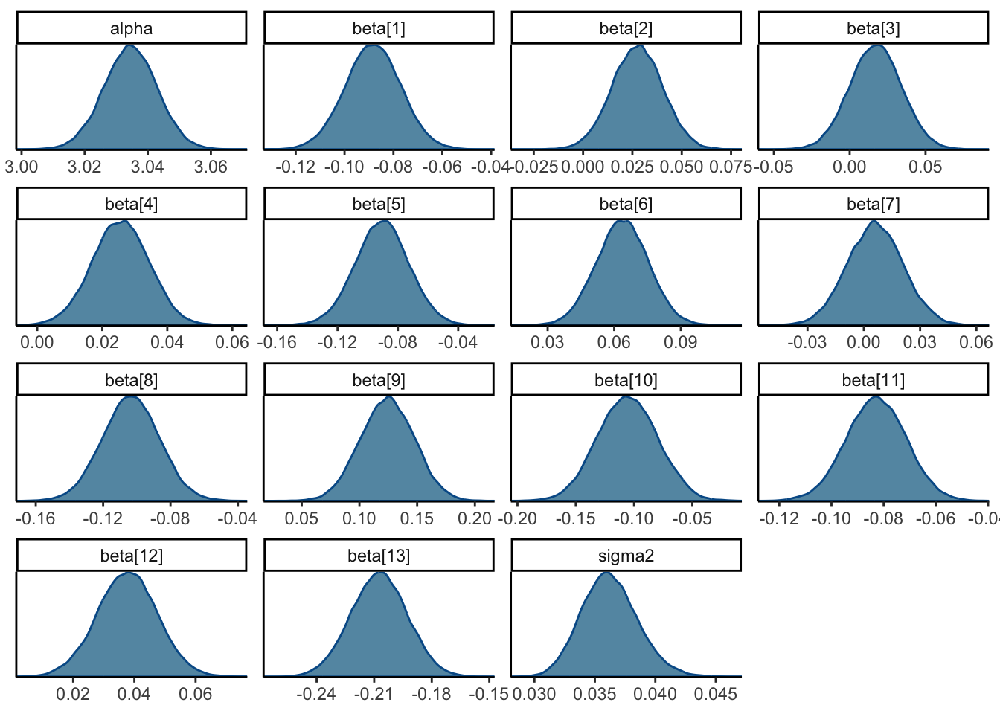

```{r}
#| output: hide
library(tidyr)
library(dplyr, warn.conflicts = FALSE)
library(stringr)
library(forcats)
library(ggplot2)
library(readr)
library(patchwork)
library(gt)
library(cubature)
library(purrr)
library(scales)
library(glue)
library(rjags)
library(posterior)
library(bayesplot)
library(broom)
theme_set(theme_classic())
```1
A clinical trial gave six subjects a placebo and six subjects a new weight loss medication. The response variable is the change in weight (pounds) from baseline (so -2.0 means the subject lost 2 pounds). The data for the 12 subjects are:
d <- tribble(
~Placebo, ~Treatment,
2.0, -3.5,
-3.1, -1.6,
-1.0, -4.6,
0.2, -0.9,
0.3, -5.1,
0.4, 0.1
)
d |>
gt()| Placebo | Treatment |
|---|---|
| 2.0 | -3.5 |
| -3.1 | -1.6 |
| -1.0 | -4.6 |
| 0.2 | -0.9 |
| 0.3 | -5.1 |
| 0.4 | 0.1 |
Conduct a Bayesian analysis to compare the means of these two groups. Would you say the treatment is effective? Is your conclusion sensitive to the prior?
Solution: We use the comparison of two normal means with equal unknown variance from page 123 in the book. The model uses a flat, Jeffreys’ prior.
Y1 <- d$Placebo
Y2 <- d$Treatment
# Y2 is the n2-vector of data for group 2
# Statistics from group 1
Ybar1 <- mean(Y1)
s21 <- mean((Y1 - Ybar1)^2)
n1 <- length(Y1)
# Statistics from group 2
Ybar2 <- mean(Y2)
s22 <- mean((Y2 - Ybar2)^2)
n2 <- length(Y2)
delta_hat <- Ybar2 - Ybar1
s2 <- (n1 * s21 + n2 * s22) / (n1 + n2)
scale <- sqrt(s2) * sqrt(1 / n1 + 1 / n2)
df <- n1 + n2
cred_int <- delta_hat + scale * qt(c(0.025, 0.975), df = df)
cred_int[1] -4.6058799 -0.1941201The credible interval does not include 0, so it seems that the treatment is effective. Let’s compare to harsher priors.
We will fit the model
\[ Y_i\vert\mu, \sigma^2 \sim \mathrm{Normal}(\mu,\sigma^2),\quad i=1,\dots,n, \]
and
\[ Y_i\vert\mu,\delta, \sigma^2 \sim \mathrm{Normal}(\mu+\delta,\sigma^2),\quad i=n+1,\dots,n+m, \]
where
\[ \begin{gathered} \mu,\delta\sim\mathrm{Normal}(0, 100^2) \\ \sigma^2\sim\mathrm{InvGamma}(a, b). \end{gathered} \]
where we let \(a\) and \(b\) vary from 0.01 to 10. Below, we create the function calculate_p_delta() that allows us to easily compare many different priors.
calculate_p_delta <- function(a, b) {
data = list(
Y1 = d$Placebo,
Y2 = d$Treatment,
n = nrow(d),
m = nrow(d),
a = a,
b = b
)
model_string <- textConnection("model{
# Likelihood
for (i in 1:n) {
Y1[i] ~ dnorm(mu, tau)
}
for (i in 1:m) {
Y2[i] ~ dnorm(mu + delta, tau)
}
# Priors
mu ~ dnorm(0, 0.01^2)
delta ~ dnorm(0, 0.01^2)
tau ~ dgamma(a, b)
sigma2 <- 1 / tau
}")
model <- jags.model(
model_string,
data = data,
n.chains = 4,
quiet = TRUE
)
update(model, 10000, progress.bar = "none")
params <- c("mu", "delta", "sigma2")
samples <- coda.samples(
model,
variable.names = params,
n.iter = 10000,
progress.bar = "none"
)
posterior_jags <- samples |>
as_draws_df()
p_lower <- posterior_jags |>
subset_draws(variable = "delta") |>
summarise_draws("P(delta < 0)" = function(x) mean(x < 0)) |>
pull(`P(delta < 0)`)
sigma2 <- posterior_jags |>
subset_draws(variable = "sigma2") |>
summarise_draws(mean) |>
pull(mean)
tibble(
delta_p = p_lower,
sigma2 = sigma2
)
}
values <- c(0.01, 0.1, 0.3, 1, 3, 5, 7, 10)
results <- crossing(
a = values,
b = values
) |>
mutate(
results = map2(a, b, calculate_p_delta)
) |>
unnest(results)We see that for higher values of \(a\) and \(b\), we become more and more sure that \(\delta < 0\)
results |>
ggplot(aes(a, delta_p)) +
geom_line(aes(col = b, group = b)) +
scale_y_continuous(
labels = label_percent()
) +
scale_x_continuous(
breaks = breaks_pretty()
) +
labs(
title = expression(paste(P(delta < 0), " is very sensitive to the priors we put on our variance")),
y = expression(P(delta < 0))
)
This seems to be because for higher values of \(a\) and \(b\), we pull the posterior distribution of \(\sigma^2\) towards lower values.
results |>
ggplot(aes(sigma2, delta_p)) +
geom_line() +
scale_y_continuous(
labels = label_percent()
) +
scale_x_continuous(
breaks = breaks_pretty()
) +
labs(
title = expression(paste()),
y = expression(P(delta < 0)),
x = expression(paste("Posterior mean of ", sigma^2))
)2
Load the classic Boston Housing Data in R:
data(Boston, package = "MASS")
d <- Boston |> as_tibble()The response variable is medv, the median value of owner-occupied homes (in $1,000s), and the other 13 variables are covariates that describe the neighborhood.
- Fit a Bayesian linear regression model with uninformative Gaussian priors for the regression coefficients. Verify the MCMC sampler has converged, and summarize the posterior distribution of all regression coefficients.
Solution:
y <- d$medv |> log()
X <- d |> select(-medv) |> as.matrix() |> scale()
data = list(
y = y,
X = X,
n = length(y),
p = ncol(X)
)
model_string <- textConnection("model{
# Likelihood
for (i in 1:n) {
y[i] ~ dnorm(mu[i], tau)
mu[i] = alpha + inprod(X[i, ], beta)
}
for (i in 1:p) {
beta[i] ~ dnorm(0, 0.00001)
}
alpha ~ dnorm(0, 0.00001)
tau ~ dgamma(0.001, 0.001)
sigma2 <- 1 / tau
}")
model <- jags.model(
model_string,
data = data,
n.chains = 4,
quiet = TRUE
)
update(model, 10000, progress.bar = "none")
params <- c("alpha", "beta", "sigma2")
samples <- coda.samples(
model,
variable.names = params,
n.iter = 10000,
progress.bar = "none"
)
posterior_jags <- samples |>
as_draws_df()We see from the table and trace plots below that our sampler has converged.
posterior_jags |>
summarise_draws() |>
gt() |>
fmt_number()| variable | mean | median | sd | mad | q5 | q95 | rhat | ess_bulk | ess_tail |
|---|---|---|---|---|---|---|---|---|---|
| alpha | 3.03 | 3.03 | 0.01 | 0.01 | 3.02 | 3.05 | 1.00 | 39,701.44 | 38,755.22 |
| beta[1] | −0.09 | −0.09 | 0.01 | 0.01 | −0.11 | −0.07 | 1.00 | 14,560.74 | 23,748.08 |
| beta[2] | 0.03 | 0.03 | 0.01 | 0.01 | 0.01 | 0.05 | 1.00 | 9,752.13 | 18,207.50 |
| beta[3] | 0.02 | 0.02 | 0.02 | 0.02 | −0.01 | 0.05 | 1.00 | 5,318.65 | 11,686.64 |
| beta[4] | 0.03 | 0.03 | 0.01 | 0.01 | 0.01 | 0.04 | 1.00 | 30,897.64 | 37,311.90 |
| beta[5] | −0.09 | −0.09 | 0.02 | 0.02 | −0.12 | −0.06 | 1.00 | 6,543.03 | 11,980.18 |
| beta[6] | 0.06 | 0.06 | 0.01 | 0.01 | 0.04 | 0.08 | 1.00 | 10,022.29 | 20,177.68 |
| beta[7] | 0.01 | 0.01 | 0.01 | 0.01 | −0.02 | 0.03 | 1.00 | 8,572.99 | 16,048.64 |
| beta[8] | −0.10 | −0.10 | 0.02 | 0.02 | −0.13 | −0.08 | 1.00 | 6,817.62 | 12,809.13 |
| beta[9] | 0.12 | 0.12 | 0.02 | 0.02 | 0.09 | 0.16 | 1.00 | 2,909.60 | 6,358.69 |
| beta[10] | −0.11 | −0.11 | 0.03 | 0.03 | −0.15 | −0.06 | 1.00 | 2,742.38 | 5,907.06 |
| beta[11] | −0.08 | −0.08 | 0.01 | 0.01 | −0.10 | −0.06 | 1.00 | 13,296.12 | 23,371.60 |
| beta[12] | 0.04 | 0.04 | 0.01 | 0.01 | 0.02 | 0.05 | 1.00 | 24,180.26 | 32,833.75 |
| beta[13] | −0.21 | −0.21 | 0.01 | 0.01 | −0.23 | −0.18 | 1.00 | 8,338.21 | 16,662.67 |
| sigma2 | 0.04 | 0.04 | 0.00 | 0.00 | 0.03 | 0.04 | 1.00 | 35,405.06 | 38,925.32 |
posterior_jags |>
mcmc_trace()- Perform a classic least squares (e.g. using the
lmfunction inR). Compare the results numerically and conceptually with the Bayesian results.
Solution:
m <- lm(y ~ X)
results_ols <- tidy(m, conf.int = T) |>
filter(term != "(Intercept)") |>
select(
term,
mean = estimate,
lower = conf.low,
upper = conf.high
) |>
mutate(
term = glue("beta[{row_number()}]"),
type = "OLS"
)results_jags <- posterior_jags |>
summarise_draws() |>
filter(
str_detect(variable, "beta")
) |>
select(
term = variable,
mean,
lower = q5,
upper = q95
) |>
mutate(
type = "JAGS"
)results_ols |>
bind_rows(
results_jags
) |>
mutate(
term = fct_reorder(term, parse_number(term))
) |>
ggplot(aes(term, mean, ymin = lower, ymax = upper, col = type)) +
geom_pointrange(position = position_dodge(0.7)) +
coord_flip() +
labs(
title = "Comparing JAGS and OLS results"
)Numerically, we see that the results are nearly identical to the results from our JAGS sampler. This should not come as a surprise as we used nearly flat priors.
Conceptually, the Bayesian results let us infer by updating our subjective knowledge of the Boston housing data. A frequentist way of thinking would not let us say anything about these specific results, rather that if we were to repeat this analysis on similarly obtained data an infinite amount of times and based our decisions on those results, we could put bounds on how often our decisions would be wrong.
- Refit the Bayesian model with double exponential priors for the regression coefficients, and discuss how the results differ from the analysis with uninformative priors.
Solution:
y <- d$medv |> log()
X <- d |> select(-medv) |> as.matrix() |> scale()
data = list(
y = y,
X = X,
n = length(y),
p = ncol(X)
)
model_string <- textConnection("model{
# Likelihood
for (i in 1:n) {
y[i] ~ dnorm(mu[i], tau)
mu[i] = alpha + inprod(X[i, ], beta)
}
for (i in 1:p) {
beta[i] ~ ddexp(0, tau * tau_beta)
}
alpha ~ dnorm(0, 0.00001)
tau ~ dgamma(0.001, 0.001)
tau_beta ~ dgamma(0.001, 0.001)
sigma2 <- 1 / tau
}")
model <- jags.model(
model_string,
data = data,
n.chains = 4,
quiet = TRUE
)
update(model, 10000, progress.bar = "none")
params <- c("alpha", "beta", "sigma2", "tau_beta")
samples <- coda.samples(
model,
variable.names = params,
n.iter = 10000,
progress.bar = "none"
)
posterior_laplace <- samples |>
as_draws_df()posterior_jags |>
summarise_draws() |>
gt() |>
fmt_number()| variable | mean | median | sd | mad | q5 | q95 | rhat | ess_bulk | ess_tail |
|---|---|---|---|---|---|---|---|---|---|
| alpha | 3.03 | 3.03 | 0.01 | 0.01 | 3.02 | 3.05 | 1.00 | 39,701.44 | 38,755.22 |
| beta[1] | −0.09 | −0.09 | 0.01 | 0.01 | −0.11 | −0.07 | 1.00 | 14,560.74 | 23,748.08 |
| beta[2] | 0.03 | 0.03 | 0.01 | 0.01 | 0.01 | 0.05 | 1.00 | 9,752.13 | 18,207.50 |
| beta[3] | 0.02 | 0.02 | 0.02 | 0.02 | −0.01 | 0.05 | 1.00 | 5,318.65 | 11,686.64 |
| beta[4] | 0.03 | 0.03 | 0.01 | 0.01 | 0.01 | 0.04 | 1.00 | 30,897.64 | 37,311.90 |
| beta[5] | −0.09 | −0.09 | 0.02 | 0.02 | −0.12 | −0.06 | 1.00 | 6,543.03 | 11,980.18 |
| beta[6] | 0.06 | 0.06 | 0.01 | 0.01 | 0.04 | 0.08 | 1.00 | 10,022.29 | 20,177.68 |
| beta[7] | 0.01 | 0.01 | 0.01 | 0.01 | −0.02 | 0.03 | 1.00 | 8,572.99 | 16,048.64 |
| beta[8] | −0.10 | −0.10 | 0.02 | 0.02 | −0.13 | −0.08 | 1.00 | 6,817.62 | 12,809.13 |
| beta[9] | 0.12 | 0.12 | 0.02 | 0.02 | 0.09 | 0.16 | 1.00 | 2,909.60 | 6,358.69 |
| beta[10] | −0.11 | −0.11 | 0.03 | 0.03 | −0.15 | −0.06 | 1.00 | 2,742.38 | 5,907.06 |
| beta[11] | −0.08 | −0.08 | 0.01 | 0.01 | −0.10 | −0.06 | 1.00 | 13,296.12 | 23,371.60 |
| beta[12] | 0.04 | 0.04 | 0.01 | 0.01 | 0.02 | 0.05 | 1.00 | 24,180.26 | 32,833.75 |
| beta[13] | −0.21 | −0.21 | 0.01 | 0.01 | −0.23 | −0.18 | 1.00 | 8,338.21 | 16,662.67 |
| sigma2 | 0.04 | 0.04 | 0.00 | 0.00 | 0.03 | 0.04 | 1.00 | 35,405.06 | 38,925.32 |
posterior_jags |>
mcmc_dens()
The results are very similar to the ones in a. This is not really surprising as we are not really putting very strict priors on the coefficients, and we have a lot of data. The main difference between using double exponential priors vs normal priors comes when we use very tight priors. Double exponential priors are more prone to pull coefficients towards 0, whereas normal priors will never pull a coefficient completely towards zero.
- Fit a Bayesian linear regression model in a. using only the first 500 observations and compute the posterior predictive distribution for the final 6 observations. Plot the posterior predictive distribution versus the actual value for these 6 observations and comment on whether the predictions are reasonable.
Solution:
X_train <- X[1:500, ]
y_train <- y[1:500]
n_train <- length(y_train)
X_test <- X[501:506, ]
y_test <- y[501:506]
n_test <- length(y_test)
data <- list(
y_train = y_train,
n_train = n_train,
n_test = n_test,
p = ncol(X_train),
X_train = X_train,
X_test = X_test
)
model_string <- textConnection("model{
# Likelihood
for(i in 1:n_train){
y_train[i] ~ dnorm(mu_train[i],taue)
mu_train[i] <- alpha+ inprod(X_train[i,], beta[])
}
# Prediction
for(i in 1:n_test){
y_test[i] ~ dnorm(mu_test[i],taue)
mu_test[i] <- alpha+ inprod(X_test[i,], beta[])
}
# Priors
for(j in 1:p){
beta[j] ~ dnorm(0,0.001)
}
alpha ~ dnorm(0,0.001)
taue ~ dgamma(0.1, 0.1)
}")
model <- jags.model(
model_string,
data = data,
quiet = TRUE
)
update(model, 10000, progress.bar = "none")
samples <- coda.samples(
model,
variable.names = c("alpha", "beta", "y_test"),
n.iter = 50000, progress.bar = "none"
)We see on our plot below that our predictions are fairly good. Most of the points (5 ouf of 6) are inside our predictive interval
samples |>
as_draws_df() |>
subset_draws(variable = "y_test") |>
mcmc_areas(
prob = 0.5,
prob_outer = 0.95
) +
geom_segment(
data = tibble(
x = y_test,
xend = y_test,
y = 6:1,
yend = 6:1 + 1
),
aes(
x = x,
xend = xend,
y = y,
yend = yend
)
) +
scale_x_continuous(
limits = c(2.4, 3.7)
) +
labs(
title = "Compering our posterior predictive density to the test data",
subtitle = "The blue ribbon and white density are respectively 50% and 95% credible intervals."
)